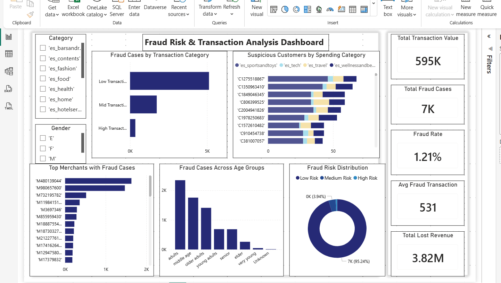
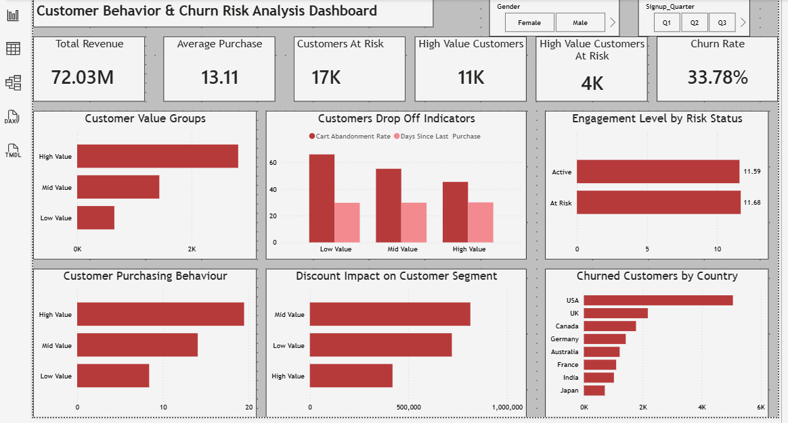
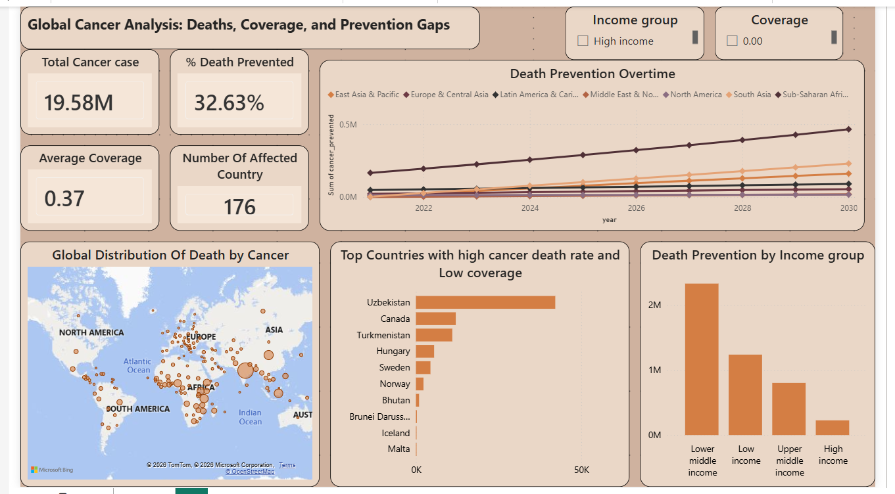
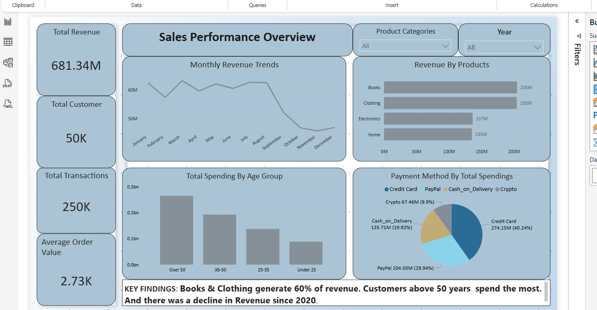

My Projects

Telecom Customer Churn Analysis
Tools: Excel | SQL | Power BI
Project Type: Customer Analytics | Retention Analysis
Analyzed telecom customer data to identify churn drivers and uncover opportunities to improve customer retention.

Fraud Risk Transaction Analysis
Tools: PostgreSQL | Power BI
Project Type: Fraud Analytics | Risk Analysis
Analyzed transaction data to uncover fraud patterns, suspicious customer behavior, and financial losses.

Stock Market Investment Risk Analysis
Tools: PostgreSQL | Power BI
Project Type: Financial Analytics | Investment Analysis
Analyzed stock market performance, volatility, and investment risk to support data-driven investment decisions.

Global Cancer Analysis
Tools: PostgreSQL | Power BI
Project Type: Healthcare Analytics
Analyzed global cancer data to understand healthcare coverage gaps and preventable deaths across countries.

Hospital Performance & Patient Insights
Tools: SQL | Power BI
Project Type: Healthcare Analytics | Operations Analysis
Analyzed hospital operations and patient records to identify service gaps and improve healthcare performance.